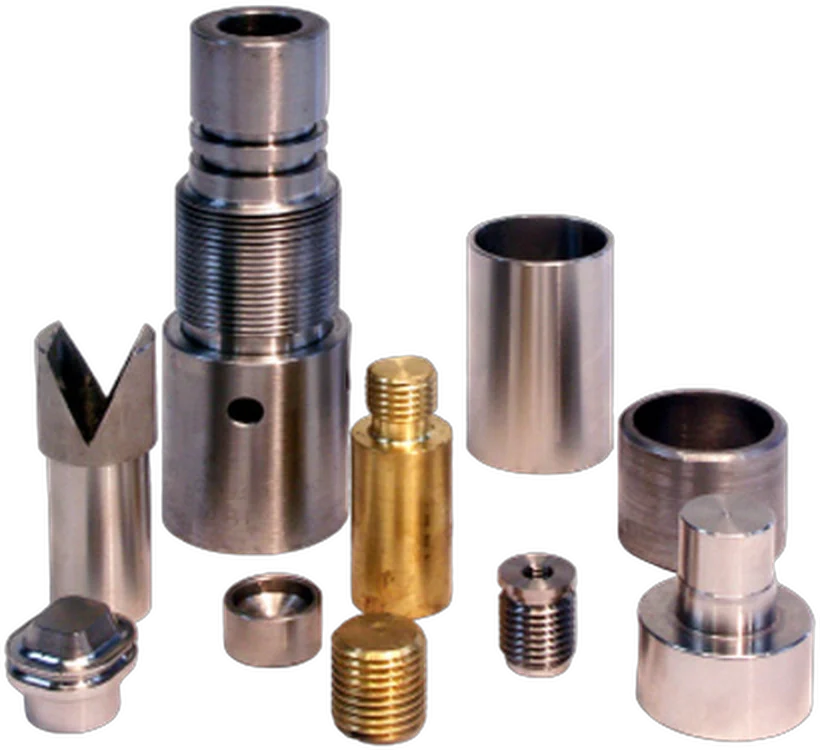

Från glasbrukets formverkstad till egen verkstad
Surte Formverkstad drivs av människor som kan glas, metall och bearbetning – och där alla delägare är engagerade i verksamheten.

När Surte Glasbruk lades ned för gott 1983 försvann även jobben i brukets formverkstad. Sju av de tidigare anställda gick då samman och fortsatte driva verkstaden i egen regi – och det gick bättre än kalkylen.
Några hållpunkter
Bruket läggs ned
Surte Glasbruk stänger och personalen i formverkstaden förlorar sina jobb.
Sju tar över
Sju tidigare anställda går samman och driver formverkstaden i egen regi.
4 miljoner kronor
Det går bättre än beräknat. Produktionen är mest formar till glasindustrin – bland annat för sex- och åttkantiga flaskor.
Ägarlett och bredare
Tre delägare och en anställd. Glasindustrin är kärnan – och verkstaden breddar sig mot övrig industri.
Glasindustrin är kärnan – hela industrin är bredden
Kärnan: verktyg till glasbruk
Kärnverksamheten är verktyg till glasbruksindustrin. Vi bidrar också inom förädling av glas, till exempel när det gäller tryck på flaskor.

Bredden: detaljer till hela industrin
Vi breddar oss mot tillverkande företag som behöver bearbetade detaljer i stål, rostfritt, brons, järn, aluminium, aluminiumbrons, gjutjärn, inconel, glasfiber, plast med mera.
Läs merRecenserade på Google
Har du en ritning eller en detalj som behöver tillverkas?
Skicka ritning och beskrivning, så återkommer vi med pris och leveranstid. Eller ring – vi svarar vardagar 07–16.